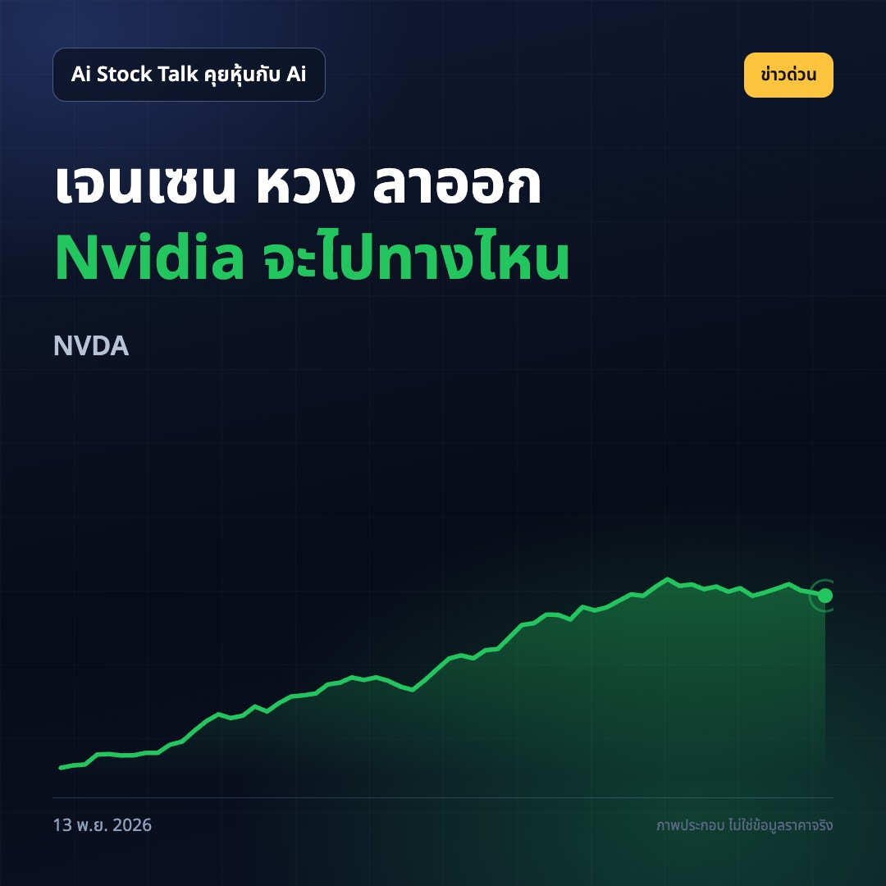
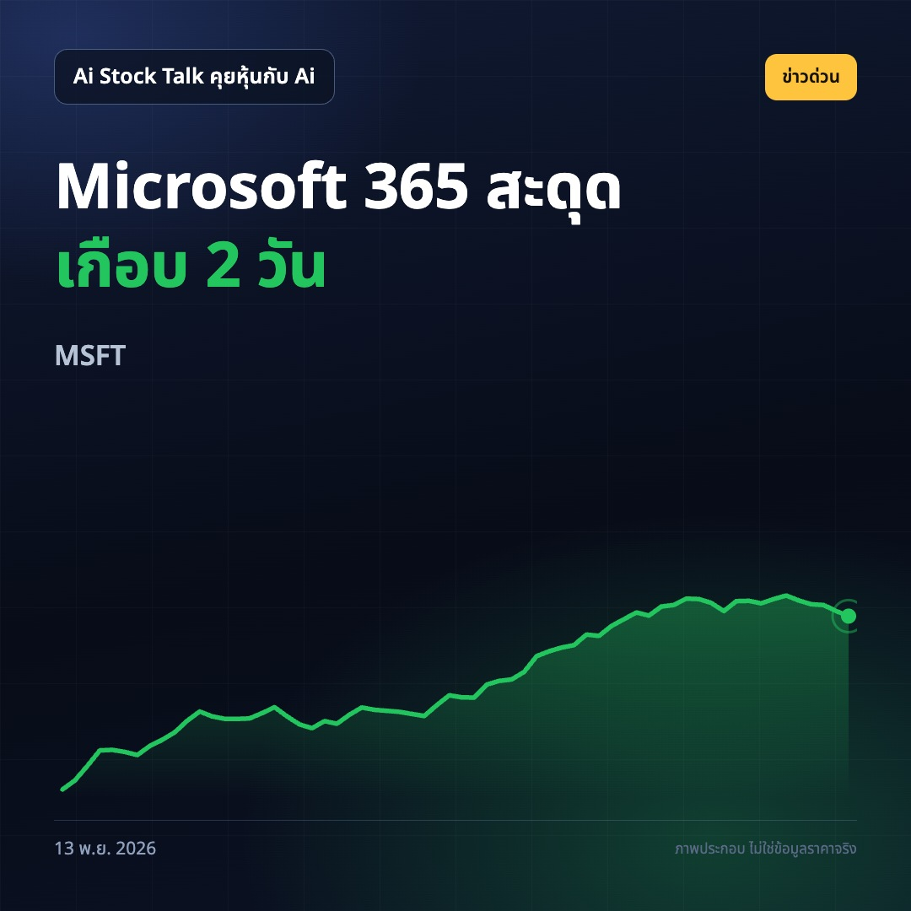
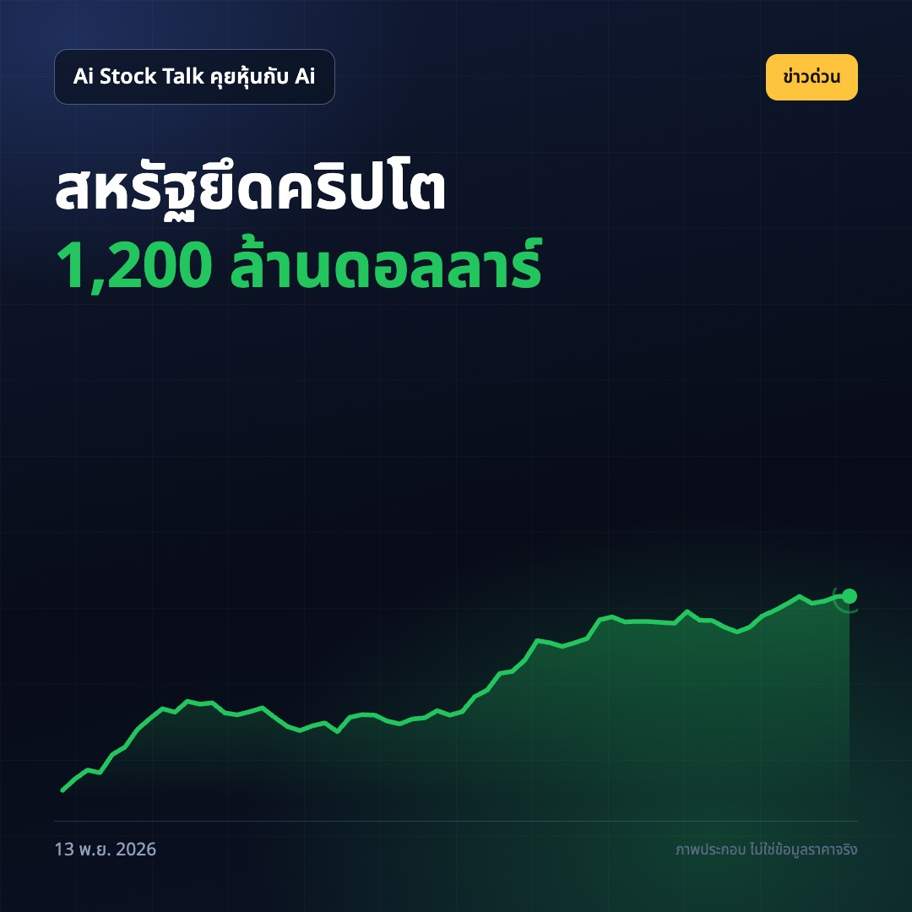

1. ผู้ก่อตั้ง Nvidia ลาออก นักลงทุนจับตาอนาคตหุ้นชิป AI

ซีอีโอ Nvidia ลาออก มูลค่าตลาดหายเกือบ 5 แสนล้านดอลลาร์ในสัปดาห์นี้
เจนเซน หวง ลาออกจากตำแหน่งซีอีโอ หลังถูกตรวจสอบเรื่องความสัมพันธ์ส่วนตัว บริษัทจึงต้องเปลี่ยนผู้นำในช่วงที่นักลงทุนจับตาธุรกิจชิป AI อย่างใกล้ชิด
มูลค่าตลาด Nvidia ลดลงเกือบ 5 แสนล้านดอลลาร์ในสัปดาห์นี้ แต่บริษัทยังมีมูลค่าราว 4 ล้านล้านดอลลาร์ คำถามต่อจากนี้คือใครจะพาบริษัทเดินหน้าหลังยุคผู้ก่อตั้ง
ทำไมต้องสน: คนที่ถือหุ้น Nvidia หรือกองทุนที่มีหุ้นนี้ ควรติดตามการเปลี่ยนผ่านผู้บริหารและความเชื่อมั่นของตลาด
คุณคิดว่าการเปลี่ยนซีอีโอจะกระทบความเชื่อมั่นต่อ Nvidia แค่ไหน?
ที่มา: https://www.cnbc.com/2026/11/13/nvidia-nvda-stock-jensen-huang-transition.html https://www.marketwatch.com/story/nvidia-has-shed-nearly-500-billion-in-market-value-this-week-its-still-a-4-trillion-ai-behemoth-2ca6eba7?mod=mw_rss_topstories
หุ้นAI #Nvidia #หุ้นสหรัฐ
2. บริการ Microsoft สะดุดเกือบสองวัน นักลงทุนจับตาความเชื่อมั่นลูกค้า

Outlook และ Microsoft 365 สะดุดเกือบ 2 วัน
ปัญหากระทบผู้ใช้หลายล้านคนทั่วโลก รวมถึงบริการอย่าง Teams โดย Microsoft ระบุว่ากำลังกู้คืนระบบ และยังไม่พบหลักฐานของกิจกรรมที่เป็นอันตราย
ผู้ใช้บางส่วนกลับเข้าอีเมลได้แล้ว แต่บางแอปยังทำงานได้ไม่เต็มที่ และการส่งอีเมลอาจล่าช้าระหว่างการแก้ปัญหา
ทำไมต้องสน: นักลงทุนที่ถือ Microsoft หรือกองทุนหุ้นเทคควรติดตามว่าบริษัทกู้บริการได้ครบเมื่อไร เพราะบริการคลาวด์และเครื่องมือทำงานเป็นส่วนที่ลูกค้าใช้งานทุกวัน
ถ้าระบบอีเมลที่คุณใช้สะดุดเกือบสองวัน งานของคุณจะกระทบตรงไหนมากที่สุด?
ที่มา: https://www.theverge.com/tech/1032862/microsoft-outlook-down-outage https://www.marketwatch.com/story/microsoft-stock-slumps-on-outage-that-includes-the-copilot-tool-it-has-been-heavily-promoting-4007dc4f?mod=mw_rss_topstories
Microsoft #หุ้นเทค #บริการคลาวด์
3. สหรัฐยึดคริปโตที่ถูกขโมยจาก Binance มูลค่า 1,200 ล้านดอลลาร์

สหรัฐยึดคริปโต 1,200 ล้านดอลลาร์ จากคดีขโมย Binance
กระทรวงยุติธรรมสหรัฐระบุว่าคริปโตที่ยึดได้เกี่ยวข้องกับการขโมยจาก Binance และกล่าวว่าการดำเนินการครั้งนี้มุ่งจัดการกับแผนการขโมยคริปโตของรัฐบาลเกาหลีเหนือเพื่อหาเงินสนับสนุนระบอบการปกครอง
ข่าวนี้เป็นการดำเนินคดีกับทรัพย์สินที่ถูกขโมย ยังไม่มีข้อมูลในรายการข่าวว่าราคาคริปโตหรือหุ้นที่เกี่ยวข้องเปลี่ยนไปเท่าไร
ทำไมต้องสน: คนไทยที่ถือสินทรัพย์ดิจิทัลควรติดตามความคืบหน้าของคดี เพราะการขโมยสินทรัพย์และการติดตามเงินคืนเกี่ยวข้องกับความเสี่ยงของตลาดที่ตนลงทุนอยู่
เวลาเลือกที่เก็บคริปโต คุณให้ความสำคัญกับความปลอดภัยเรื่องใดที่สุด?
ที่มา: https://www.cnbc.com/2026/11/13/us-seizes-binance-hack-crypto.html